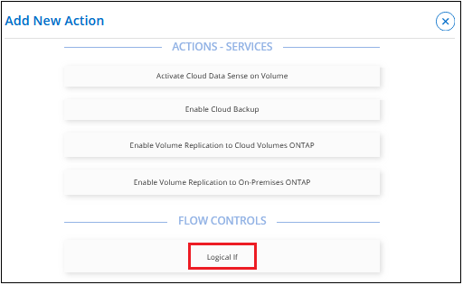

Solicitar cambios en el documento
Solicitar cambios en el documento Editar en GitHub
Editar en GitHub Guía del colaborador
Guía del colaboradorBloques de creación de plantillas
Colaboradores
Existen ciertas características que se pueden utilizar al crear una plantilla que le permiten pasar valores entre acciones (como un nombre de volumen), bifurcación condicional para conectar acciones entre sí (habilitar copias de seguridad en un volumen nuevo) y que ayudan a los usuarios a personalizar los recursos cuando utilizan la plantilla.
Controles de plantilla especiales
Antes de empezar a crear la plantilla, debe comprender algunas opciones especiales que puede establecer al rellenar previamente un valor para un parámetro en una plantilla.

Casilla editable
Marque esta casilla para permitir que el administrador de almacenamiento anule el valor rellenado previamente que ha introducido en la plantilla. De este modo, se ofrece al administrador de almacenamiento una sugerencia sobre qué valor debería tener, pero se le permite personalizar el valor de la creación del recurso.
Si no está marcada, el usuario no puede cambiar el valor y el valor codificado en la plantilla siempre se utiliza cuando el administrador implementa un recurso.
Casilla de verificación deriva
Marque esta casilla para que BlueXP supervise el valor codificado para un parámetro cuando se crea un recurso con la plantilla. Más adelante, puede ejecutar un informe de desviación para ver qué campos configurados con deriva ya no son compatibles con los ajustes de plantilla.
Si no está marcada, el usuario puede cambiar el valor a cualquier valor después de que se haya creado el recurso.

|
Para que la operación de deriva funcione, después de haber definido la deriva para algunos parámetros de la plantilla, debe habilitar la operación de deriva para la plantilla. Este es el último paso al crear una plantilla. Drift no funciona si está activado para un parámetro pero no se ha activado en la plantilla. |
Uso de una expresión regular (regex) en los campos
Hay algunos campos dentro de las plantillas que le permiten introducir un regex para definir el valor que el administrador puede introducir en el campo; por ejemplo, "Nombre de volumen" y "Nombre de recurso compartido".

Por ejemplo, si introduce "[a-za-Z][0-9a-za-Z_]{0,149}$" como regex del nombre del volumen, significa que "el nombre debe comenzar con un carácter alfabético, puede contener solo números, letras o el guión bajo, y debería tener 150 caracteres o menos de longitud".
Pasar valores entre acciones de plantilla
Las plantillas tienen la capacidad de utilizar información de una acción anterior para rellenar un campo en una acción futura. Por ejemplo, al definir el nombre del volumen que tendrá activada la funcionalidad de copia de seguridad en la nube, puede indicar a la acción copia de seguridad que utilice el valor que el administrador de almacenamiento introdujo como nombre del volumen desde la acción Crear Cloud Volumes ONTAP.
Hay tres tipos de información que el servicio AppTemplate puede utilizar:
-
Valor de entrada: Es el valor real que el administrador de almacenamiento introdujo en un campo en una acción de plantilla anterior.
-
Valor de salida: Es el valor que genera BlueXP después de crear un recurso a partir de una acción de plantilla anterior.
-
Introduzca su propio valor: Éste es un valor que se introduce; no se accede a él desde una acción anterior de la plantilla.
Por ejemplo, para permitir el análisis de cumplimiento de normativas en un volumen, el servicio Cloud Data Sense necesita tanto el "nombre del volumen" que introduce el administrador de almacenamiento (el valor de entrada) como el "UUID de volumen" que genera BlueXP cuando crea el volumen (el valor de salida).
En la siguiente ilustración, se muestra cómo introducir esta información en la sección Cloud Data Sense action de la plantilla.

Utilice condiciones para realizar diferentes acciones basadas en sentencias lógicas
Las condiciones indican a la plantilla que ejecute diferentes acciones en función de si la condición es verdadera o falsa cuando el administrador de almacenamiento ejecuta la plantilla. Para agregar una condición, seleccione la acción If. Lógico:

Por ejemplo, se puede presentar una guía que indica que, si un volumen tiene una capacidad superior a 50 GB, se debe habilitar Cloud Backup en ese volumen. Si el volumen tiene una capacidad menor, Cloud Backup no está habilitado. Puede implementarla en la plantilla, tal y como se muestra a continuación.

Las condiciones constan de dos partes:
-
Reglas: El elemento que está comprobando si es verdadero o falso.
-
Y/o instrucción: Permite utilizar varias reglas para afinar aún más si se agregan acciones adicionales.
Una Regla consta de tres partes:
Campo de origen: La ubicación desde la que se obtiene el valor para comparar.
-
Obtener valor de entrada de la acción: El valor real que el administrador de almacenamiento introdujo en un campo de una acción anterior de la plantilla.
-
Obtener valor de salida de la acción: El valor generado por BlueXP después de crear un recurso a partir de una acción de plantilla anterior.
-
Introducir valor: Es un valor que se introduce; no se tiene acceso a él desde una acción anterior de la plantilla. Este puede ser un valor de un recurso que ya existe; por ejemplo, un volumen existente.
Operador - el operador utilizado para la comparación. Las opciones son igual, no igual, mayor que, menor que, mayor o igual, menor o igual.
Valor de campo: El valor real que está comparando. Las opciones son las mismas que las del campo Source.
Una instrucción and/or permite agregar de forma condicional más acciones para los usuarios cuando ejecutan la plantilla en función de si se evalúan varias reglas como True o False. Y requiere que todas las reglas sean verdaderas o falsas, y o requiere sólo una de las reglas necesita ser verdadera o falsa.
Cuando se usan tanto una y como una declaración con sus reglas, el proceso de evaluación sigue el orden matemático estándar donde “Y” precede a “O”. Por ejemplo:
-
<Rule1> O <Rule2> Y <Rule3>
Esta afirmación se evalúa en el siguiente orden: <Rule1> O (<Rule2> Y <Rule3>)